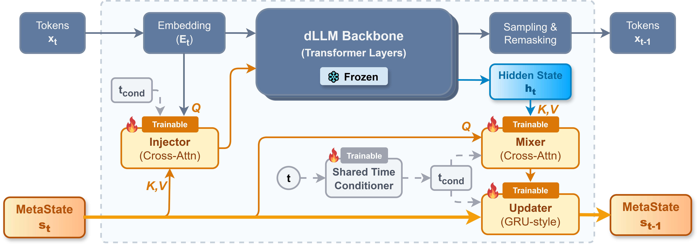
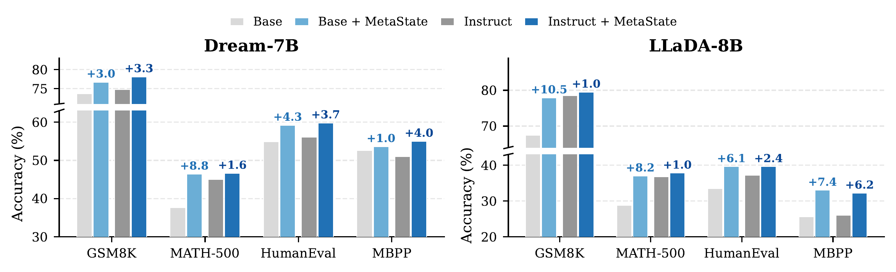

Discrete diffusion language models (dLLMs) generate text by iteratively denoising a masked sequence. However, standard dLLMs condition each denoising step solely on the current hard-masked sequence, while intermediate continuous representations are discarded after sampling and remasking. We term this bottleneck the Information Island issue: continuous information remains isolated within individual denoising steps and fails to propagate across the trajectory. This bottleneck is especially harmful for reasoning, which requires intermediate reasoning state to be preserved and updated across many denoising steps.
To address this limitation, we introduce MetaState, a lightweight recurrent augmentation that equips a frozen dLLM backbone with persistent, fixed-size working memory. MetaState comprises three modules with a shared time conditioner: a cross-attention Mixer that reads backbone activations into memory slots, a GRU-style Updater that integrates information across steps, and a cross-attention Injector that writes the updated memory back into the backbone. We train these modules with a dedicated K-step unrolling pipeline to learn multi-step dynamics.
MetaState adds only ~0.6% trainable parameters while keeping the backbone frozen, and consistently improves reasoning performance over frozen baselines on mathematical reasoning and code generation benchmarks, with an average gain of 4.5% across all evaluations.

Cross-attention module that reads backbone activations into M fixed-size memory slots, compressing sequence-level information into a compact representation.
GRU-style recurrent module that integrates information across denoising steps, allowing the memory to accumulate and refine knowledge over time.
Cross-attention module that feeds the updated memory back into backbone activations, enriching each step with persistent cross-step context.

| Model | GSM8K | MATH-500 | HumanEval | MBPP |
|---|---|---|---|---|
| Dream backbone (7B) | ||||
| Dream-Base | 73.7 | 37.6 | 54.9 | 52.6 |
| + MetaState | 76.7 | 46.4 | 59.2 | 53.6 |
| Δ vs. Base | +3.0 | +8.8 | +4.3 | +1.0 |
| Dream-Instruct | 74.8 | 45.0 | 56.1 | 51.0 |
| + MetaState | 78.1 | 46.6 | 59.8 | 55.0 |
| Δ vs. Instruct | +3.3 | +1.6 | +3.7 | +4.0 |
| LLaDA backbone (8B) | ||||
| LLaDA-Base | 67.4 | 28.8 | 33.5 | 25.6 |
| + MetaState | 77.9 | 37.0 | 39.6 | 33.0 |
| Δ vs. Base | +10.5 | +8.2 | +6.1 | +7.4 |
| LLaDA-Instruct | 78.5 | 36.8 | 37.2 | 26.0 |
| + MetaState | 79.5 | 37.8 | 39.6 | 32.2 |
| Δ vs. Instruct | +1.0 | +1.0 | +2.4 | +6.2 |
Bold marks the best result per column within each backbone group. Δ denotes improvement over the corresponding baseline.